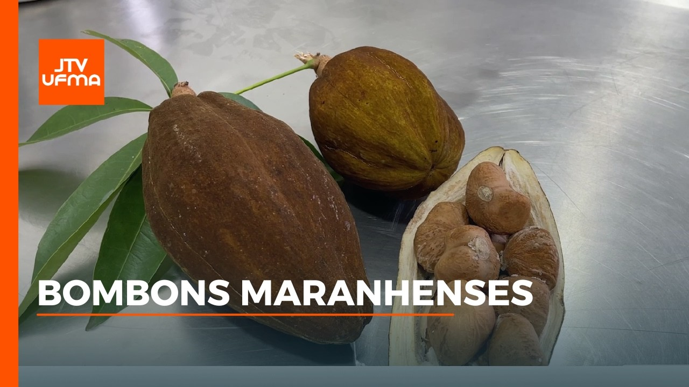
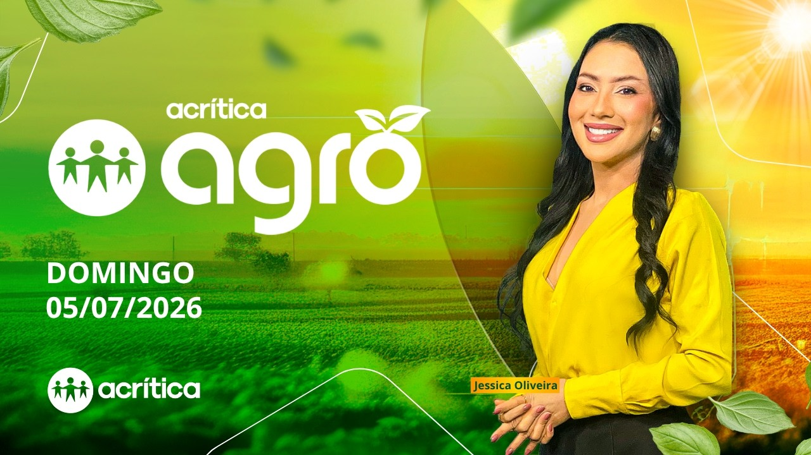

Feito com castanha nativa do Maranhão
O Sabor Natural do Maranhão em Cada Mordida
Snacks saudáveis, sustentáveis e feitos com ingredientes naturais e de alta qualidade.


100%ingredientes maranhenses
Bean to Bardo cacau à barra
Sem glútennem açúcares refinados
3sabores para escolher
Por que Maranuts
Por que escolher a Maranuts
Saudável e Nutritivo
Feito para todos, sem glúten, lactose ou açúcares refinados.
Natural e Sustentável
Ingredientes regionais e processo ecológico.
Produção Artesanal
Do cacau à barra, com cuidado em cada etapa.
Linha de snacks


Nossos Produtos
Snacks nutritivos que unem a excelência da castanha do Maranhão ao sabor rico do cacau.
Zero açúcar · Zero lactose
Snack de Chocolate & Castanha do Maranhão Sem Açúcar e Sem Lactose
Peça pelo WhatsApp
Nosso Propósito
A Essência da Maranuts
Fundada por engenheiras de alimentos apaixonadas por chocolate, a Maranuts nasceu para levar ao mundo a riqueza natural e o sabor das castanhas do Maranhão. Nossa missão é unir saúde e sustentabilidade em produtos deliciosos.
Nossos Valores
- SustentabilidadePreservamos o meio ambiente e valorizamos a cultura local em cada produto.
- Impacto Social e LocalCada snack Maranuts promove o desenvolvimento sustentável e o bem-estar das comunidades locais.
- Inovação e ExcelênciaCriamos produtos nutritivos e saudáveis, sem abrir mão da qualidade.
- Estilo de VidaCada produto contribui para um estilo de vida saudável sem deixar de ser leve e saboroso.
Nosso Processo

O Processo Maranuts
Da semente à barra, nossos produtos são feitos de maneira artesanal e sustentável.
Ingredientes 100% Maranhenses
- 01Nibs de cacau
- 02Massa de cacau
- 03Edulcorante Maltitol
- 04Castanha do Maranhão
Equipe


Nossa Equipe
A Maranuts é fruto da dedicação e paixão de um grupo de profissionais que acredita no poder dos alimentos naturais e na riqueza dos ingredientes regionais do Maranhão.
Fundadores
Daniel Duarte Costa
Doutor em Biotecnologia
Daniela Souza
Doutora em Ciência dos Alimentos
Leonardo Leocádio
Doutor em Engenharia e Gestão do Conhecimento
Yohana Vieira de Sousa Silva
Estudante de Engenharia de Alimentos
Breno Abbott Linke
MBA em Gestão Comercial
Equipe de Pesquisa
Sara Fonseca Monteiro
Engenheira de Alimentos
Bruno Henrrique Guimarães de Sousa
Estudante de Engenharia de Alimentos
Camila Rebeca Menezes Sardinha
Estudante de Engenharia de Alimentos
Na mídia


Notícias
A Maranuts na mídia: veja o que estão falando sobre nós.
20/07/2026 · TV Brasil / Repórter Brasil
Castanha nativa vira produto inovador
Assistir vídeo
14/07/2026 · Imperatriz Notícias / UFMA
Da floresta ao paladar: pesquisa da UFMA transforma castanha maranhense em símbolo da bioeconomia
Ler notícia
08/07/2026 · YouTube
Bombons Maranhenses
Assistir vídeo
05/07/2026 · Acrítica Agro (YouTube)
Acrítica Agro
Assistir vídeo
17/05/2026 · Movimento Econômico
Castanha maranhense sem cadeia produtiva ganha mercado como chocolate
Ler notícia
25/02/2026 · Revista FAPEMA
Castanha Nativa do Maranhão é Base de Produto Alimentício Sustentável e Nutritivo
Ler notícia
23/01/2026 · Portal Padrão UFMA
UFMA se destaca no Prêmio Fapema 2025 e conquista 18 troféus
Ler notícia
18/06/2025 · Portal Padrão UFMA
UFMA Imperatriz realiza terceira edição da Feira de Negócios
Ler notícia
07/12/2024 · Record News
O Salto - Record News
Assistir vídeo
16/09/2024 · Governo do Maranhão
Startup apoiada pela Fapema desenvolve o Bombom do Maranhão com castanha nativa do estado
Ler notícia
16/09/2024 · Blog Zeca Soares
Startup apoiada pela Fapema produz bombom com castanha nativa
Ler notícia
12/05/2023 · FAPEMA
Lançada nova fase do edital Centelha, programa de estímulo a novos produtos e startups maranhenses
Ler notíciaFale Conosco
Contate-nos pelo e-mail ou nos chame pelo WhatsApp.